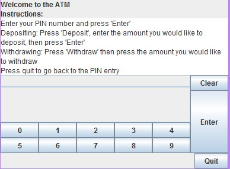

A current undergraduate student at the University of Liverpool with a predicted 2:1 honours degree in Software Development, looking to secure a graduate software development based position or similar to enhance my current skills and knowledge within the field and to further expand my experience with numerous programming languages.
Within one of my modules during my time at the University of Liverpool, I was tasked to make an app that was context aware and displayed locations and information of artworks around the campus using a map with annotations and the user’s location.
Because many of the artworks were within the same buildings, a feature of the app was to group artworks that were in the same building on the map so that clicking on the annotation would display a list of artworks within the building.
When a specific artwork was pressed, information about the artwork and a picture of the artwork were displayed for the user to view. This data would be stored into core data when the app was started and would then be retrieved when necessary to display to the user.
The artworks were also listed inside of a table that the user could scroll through as an alternative way to view the artworks. These entries in the table were ordered based on the distance the artworks were from the user which was calculated through the latitude and longitude values of each artwork and the user.
This game plays by allowing the user to place a user controlled sub, an enemy sub, an obstacle and many fuel cells onto an empty board. Once the board is completed and start game is pressed, the game works through a turn based system where the objective is to collect as many fuel cells as possible while avoiding the enemy sub and not running out of fuel. Each fuel cell is equivalent to the number it represents and adds this total to the amount of fuel left and the score when taken. The enemy sub will also move around the board collecting cells and targeting the player. If the player is caught by the enemy, collects fewer points than the enemy or runs out of fuel, the game is lost.
Using the jMonkey Engine which is designed to implement games using Java code, I created a simple copy of the Arkanoid (also known as Breakout) game. The game works by detecting collisions of the ball, with the player controlled board at the bottom, the walls and the pegs to determine the new trajectory of the ball and slowly increase the velocity of the ball as the game progresses. When a peg is hit, it will disappear and add to the users score, when all pegs have been hit then next round starts. The user is given 3 lives and will lose the game when all 3 lives are lost.
Using the Swing toolkit for Java, I implemented an interface for an ATM that would wait for a user to enter their PIN. Once entered correctly, the interface would display the user’s balance and allow them to either withdraw or deposit money from their account updating their balance when enter was pressed.
Predicted grade: 2:1
Key Skills gained:
Notable Modules – Logic in Computer Science, Database Development, Software Engineering, Advanced Object-Oriented Programming, Artificial Intelligence, Scripting Languages, Mobile Computing and Robotics and Autonomous Systems.
Grade: D*D*D*
Key Units completed:
Java, Swift, C, PHP, SQL, HTML/CSS, JavaScript, Perl, Java Swing, leJOS, Assembly Language, Prolog
Eclipse, Notepad++, Xcode, Microsoft Visual Studio, Android Studio, phpMyAdmin
Windows, Linux, Mac OS, Android
I have a keen interest in playing football. Since the start of my degree I have been playing for the University of Liverpool Computer Science department football club, where I was able to meet and work with many people with similar interests to myself. Within my third year on the team, I was named captain. This role included organising training sessions and naming a team for each match that we played. It also helped me to improve my leadership skills both on and off of the pitch through selecting roles and positions for each player.
During my spare time I also enjoy thinking of ideas of future programs and applications and then creating them. These ideas span from simple games, played on both computers and mobile devices within applications, to small programs that include features that I never used before, to further my skills within the language used.